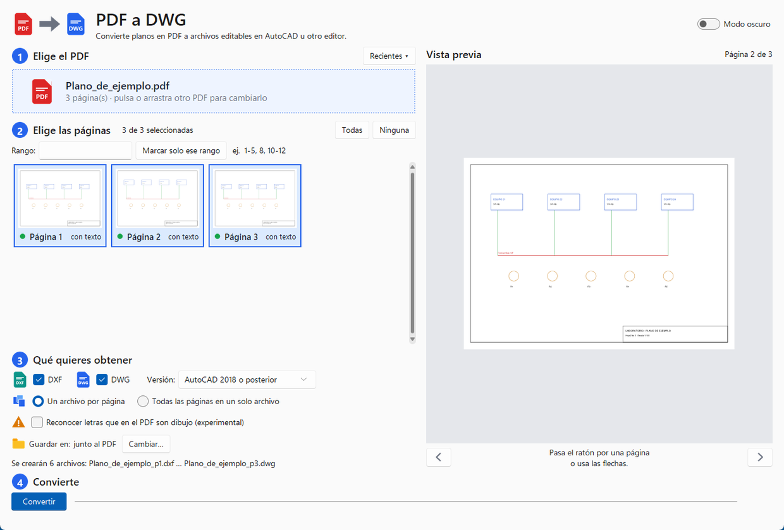

Conserva capas y colores
Si el PDF viene de AutoCAD, recupera los nombres de capa, los colores y los grosores de línea.
Convierte tus planos en PDF en archivos DXF y DWG editables para AutoCAD u otro editor, con sus capas, colores y textos. Sin instalar nada y sin subir tus archivos a ningún sitio.
PDF_a_DWG.zip · 79 MB · Windows 10 y 11 (64 bits) · versión del 21 de octubre de 2026

Pensado para cuando solo tienes el plano en PDF y necesitas modificarlo.
Si el PDF viene de AutoCAD, recupera los nombres de capa, los colores y los grosores de línea.
Recupera los textos reales del PDF. Opcionalmente intenta reconocer las letras que están dibujadas (experimental).
Un DXF/DWG por página, o todas las páginas en un solo archivo, una junto a otra con su rótulo.
Los planos nunca salen de tu equipo: la conversión se hace localmente, sin internet.
Cuatro pasos, sin instalación.
PDF_a_DWG.zip en tu computadora (por ejemplo, en Documentos).PDF_a_DWG.exeSi Windows muestra «Windows protegió su PC», pulsa «Más información» y luego «Ejecutar de todos modos». Sale porque el programa no tiene firma digital.1-5, 8..dxf y .dwg quedan junto al PDF, o en la carpeta que elijas.Para escribir DWG el programa usa ODA File Converter, de Open Design Alliance. No viene incluido porque su licencia es gratis solo para uso no comercial y no se puede redistribuir libremente.
Descárgalo e instálalo una vez desde la página de ODA. El programa lo detecta solo. Sin él, todo funciona igual, pero solo se crea DXF (que AutoCAD, LibreCAD y QCAD abren sin problema).
| Funciona con | Planos en PDF vectorial (hechos en CAD). No convierte PDF escaneados (imágenes). |
| Formatos de salida | DXF (R2004) y DWG (de AutoCAD 2000 a 2018 o posterior). |
| Sistema | Windows 10 u 11, 64 bits. No requiere instalar Python ni nada más. |
| No conserva | Transparencias y degradados de color. |
| Reconocer letras | Usa el reconocimiento de Windows en español (hay que tener ese idioma instalado). Es experimental: acierta cerca de 9 de cada 10 textos en la prueba hecha; revisa el resultado. |
Porque no está firmado digitalmente (la firma tiene un costo anual). Al pulsar «Más información» → «Ejecutar de todos modos» se abre con normalidad. El código fuente completo está disponible abajo, así que puedes revisarlo.
No. Todo se procesa en tu computadora; el programa no necesita conexión.
Un escaneo es una foto, no tiene líneas ni textos. Este programa convierte las líneas, rellenos y textos que ya existen dentro del PDF, así que solo sirve con planos exportados desde un programa de dibujo.
Pasa cuando el PDF se generó con las letras convertidas a dibujo. En ese caso activa «Reconocer letras que en el PDF son dibujo»: crea una capa de texto editable aparte, sin tocar el dibujo original.
El DXF lo abre cualquier versión reciente. Para el DWG puedes elegir la versión de salida (2000, 2004, 2007, 2010, 2013 o 2018 y posterior) según la más antigua que use tu equipo.
El programa incluye PyMuPDF (licencia AGPL, Artifex), por eso se publica también el código fuente. Además usa ezdxf, OpenCV, Pillow, sv-ttk y tkinterdnd2 (licencias libres).